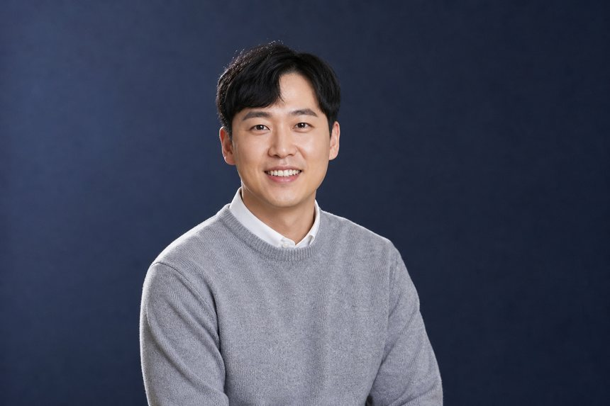
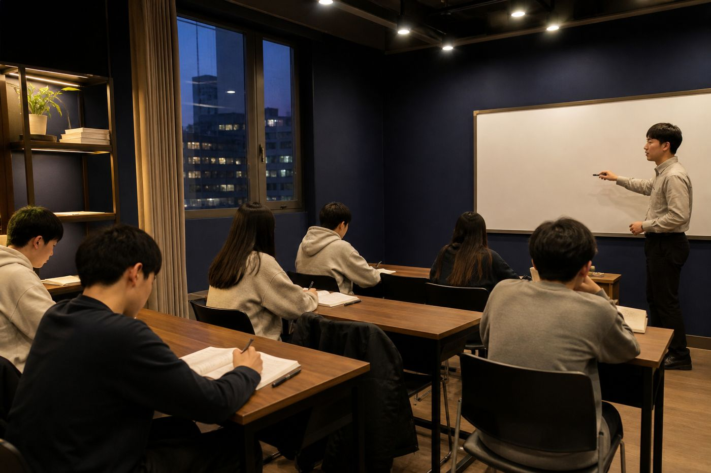

개념완성
교과 개념을 0번부터 다시 세웁니다. 학교 진도 앞선 선학습이 아니라, 학교 시험에 나오는 개념을 100% 이해할 때까지 반복 수업합니다.
학교별 내신 유형 분석 수업중1 ~ 고3 수학 · 소수 정예 내신·수능
단원이 끝날 때마다 매듭 테스트를 통과해야 다음 단원으로 갑니다. 미완의 개념을 남기지 않는 것이, 결수학의 원칙입니다.

Why it works
결수학학원은 수업·문제·시험을 한 시스템으로 묶습니다. 매 단원의 끝을 정확히 매듭지어야 다음 단원으로 넘어갑니다.
교과 개념을 0번부터 다시 세웁니다. 학교 진도 앞선 선학습이 아니라, 학교 시험에 나오는 개념을 100% 이해할 때까지 반복 수업합니다.
학교별 내신 유형 분석 수업틀린 문제는 그날그날 유형별로 분류해 재시험합니다. "틀렸으니 고치자"가 아니라, 같은 유형을 통과할 때까지 문제를 갈아 바꿔 줍니다.
주 2회 개인 오답 복습 시간일주일 학습을 매주 테스트로 매듭짓습니다. 미달 과목은 다음 주에 보충 일정을 다시 잡습니다. 성적표가 아니라 이 테스트 기록이 성적을 만듭니다.
매주 토요일 · 결과 문자 통보Mentors
모든 반은 담당 강사 1인이 수업부터 테스트 grading, 학부모 상담까지 책임집니다.
중등 수학 · 학습 설계
경희대 수학과. 중등 수학 전문 15년, 누적 학부모 상담 3,000회 이상. 학교별 내신 기출을 분석한 반별 맞춤 커리큘럼 설계를 담당합니다.
고1·고2 내신 · 고3 수능
서울대 수리과학부. 수능 수학 만점자 12인 배출. 4점·킬러 중급 문항을 개념 복기로 푸는 훈련 루틴을 고등부 전 과정에 적용합니다.
중1·중2·중3 내신
연세대 수학과. 중등 8년. 기초 개념이 무너진 학생의 복구 수업을 전문으로 하며, 주간 매듭 테스트의 grading과 보충 설계를 맡습니다.
Curriculum
학년 탭을 누르면 담당 강사, 과목 구성, 주간 시간표가 바뀝니다. 모든 반은 정원 8명입니다.
교과서 단원별 개념 재구성 + 학교 기출 유형 훈련. 학교 시험 2주 전부터 기출 실전으로 전환합니다.
중3 내신 관리와 고1 선수 개념(수학Ⅰ·연립)을 병행해 고등부 진급 공백을 없앱니다.
매주 토요일 오전 진행. 주간 학습 단원 전 범위로 출제하며, 미달 시 다음 주 보충 수업을 배정합니다.
| 시간 | 월 | 수 | 금 | 토 |
|---|---|---|---|---|
| 16:00–17:30 | 중1 (8명) | 중1 (8명) | 중1 (8명) | 매듭 테스트 |
| 17:40–19:10 | 중2 (8명) | 중2 (8명) | 중2 (8명) | 매듭 테스트 |
| 19:20–20:50 | 중3 (8명) | 중3 (8명) | 중3 (8명) | 오답 클리닉 |
학교 진도(수학Ⅰ·수학Ⅱ)에 맞춘 개념 + 서술형 채점 기준 훈련. 학교별 서술형 모범답안 형식까지 연습합니다.
선택 과목별 담당 반 운영. 3점 문제를 0실수로 잠그는 계산 훈련과 4점 문항 개념 복기 루틴을 함께 돌립니다.
주간 범위 단원-test 방식. 결과는 매주 학부모 문자 통보, 70% 미달 반은 주말 보충 수업 배정입니다.
| 시간 | 화 | 목 | 금 | 토 |
|---|---|---|---|---|
| 17:00–18:40 | 고1 (8명) | 고1 (8명) | 고1 (8명) | 매듭 테스트 |
| 18:50–20:30 | 고2 (8명) | 고2 (8명) | 고2 (8명) | 매듭 테스트 |
| 20:40–21:40 | 오답 클리닉 | 오답 클리닉 | 개인 자율 | 개인 자율 |
주 2회 실전 모의고사(주말 제외 실시) + 회차별 백지 복습. 등급컷까지 남은 단원을 매주 데이터로 관리합니다.
수능 17~22번을 구간별로 분해해 유형 공략. "풀이 암기"가 아니라 개념 조합으로 푸는 훈련입니다.
월 1회 30분 1:1 상담으로 시험지 전략(풀이 순서·시간 배분)과 주간 학습량을 함께 조정합니다.
| 시간 | 월 | 수 | 목 | 금 |
|---|---|---|---|---|
| 14:00–16:00 | 실전 모의고사 | 킬러 캐치 (8명) | 실전 모의고사 | 킬러 캐치 (8명) |
| 16:10–17:40 | 백지 복습 | 백지 복습 | 백지 복습 | 1:1 전략 상담 |
Results
2026학년도 2학기 기말고사 기준, 결수학학원 재학생의 성적 변화입니다. (등수는 학년 전체 기준)
“중간고사에서 3등급을 받고 학원을 옮겼는데, 주말마다 오는 테스트 문자가 가장 도움이 됐어요. 아이가 뭘 모르는지 선생님이 저보다 먼저 알고 있었습니다. 기말엔 1등급 받았어요.”
중3 학부모 김OO · 재등록 2학기
“고1 올라오면서 수학시간 따라가기 힘들다고 했는데, 8명 반이라 질문을 편하게 하겠더라고요. 학교 서술형 답안 형식까지 연습시켜 줘서 내신이 바로 올랐습니다.”
고1 학부모 이OO · 재등록 3학기
“다른 곳에서는 문제집만 나왔는데 여기선 틀린 문제 유형을 정리해 주고 다음 주에 다시 봅니다. 수능 모의고사 등급이 4등급에서 2등급으로 왔고, 아이가 자신감을 찾았어요.”
고3 학부모 박OO · 재등록 1학기
Visit & Consult
무료 진단 테스트(40분) + 1:1 학습 상담(20분)을 함께 진행합니다. 아래 폼을 남겨 주시면 순서대로 연락드립니다.

※ 본 페이지의 주소·전화·인물·수치는 포트폴리오 시연용 예시입니다.
평균 1영업일 이내 전화 회신드립니다.
FAQ